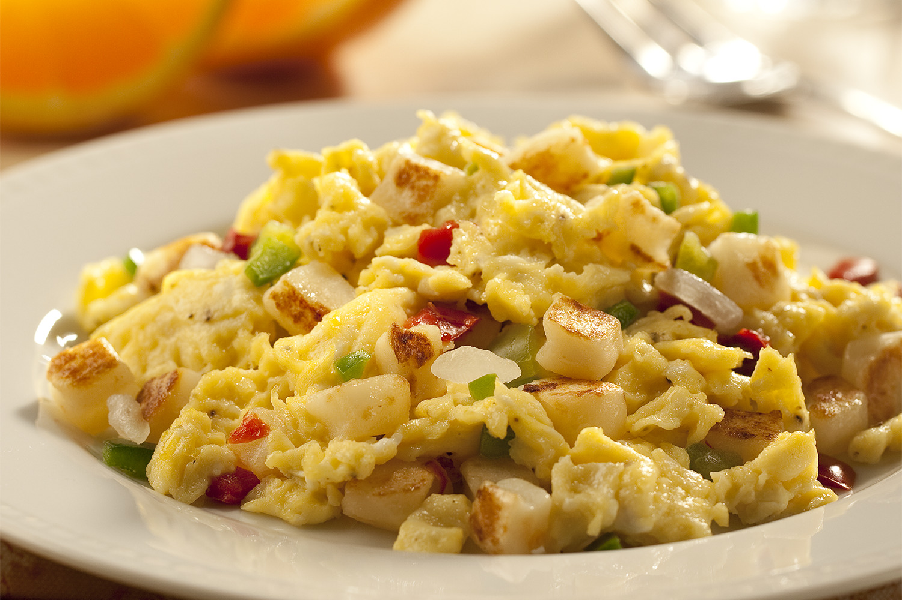

Chicken and Potato Scramble

Description
Servings: 1-2
Total time: 25 minutes
A healthy way to start your day. Packed with protein and healthy carbs to give you the energy you need to tackle the day.
Ingredients
- 1lb chicken breast
- 2 eggs
- 6-8 baby golden potatoes
- Chicken seasoning/rub of your choice
- 1 red bell pepper(optional)
- 1 white onion(optional)
Steps
- Dice potatoes into small cubes and saute in frying pan with a light coating of olive oil over medium heat for 15 minutes, stirring occasionaly. Season with salt and pepper.
- (Optional) Dice green bell pepper and onion into small squares. Add to potatoes, stirring occasionaly.
- Dice chicken breast into small cubes and saute in a frying pan with a drizzle of olive oil over medium-high heat for 10-12 minutes, stirring occasionaly. Season with your choice of chicken rub/seasoning.
- Scramble eggs. Lightly season with pepper.
- Once chicken, eggs, and potatoes are finished cooking, combine all ingredients into a large bowl. Mix in all indgredients thoroughly.
- Enjoy!